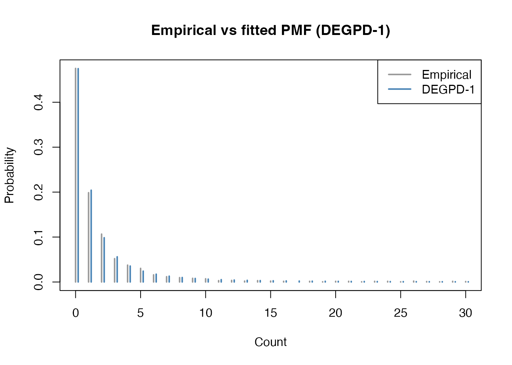

Discrete EGPD Models for Insurance Complaint Counts
Source:vignettes/insurance-complaints.Rmd
insurance-complaints.RmdThis vignette demonstrates fitting Discrete Extended Generalized
Pareto Distribution (DEGPD) models to insurance complaint count data
using the egpd package. The data record the number of
upheld complaints against automobile insurance companies in New York
State.
Data
library(egpd)
data(ny_complaints)
str(ny_complaints)
#> 'data.frame': 1942 obs. of 4 variables:
#> $ year : int 2020 2020 2020 2020 2020 2020 2020 2020 2020 2020 ...
#> $ upheld : int 0 0 0 0 0 0 0 0 0 0 ...
#> $ total : int 20 2 13 5 0 4 5 5 3 5 ...
#> $ premiums: num 107.1 65 63.5 53.2 43.8 ...The response variable is the number of upheld complaints per insurer per year. These are non-negative integer counts with a heavy right tail.
Fitting DEGPD models
The egpd() function fits DEGPD models within a GAM
framework. For intercept-only models (no covariates), each parameter
gets a ~ 1 formula. The DEGPD family uses a log link for
the scale (sigma) and shape (xi) parameters,
so the fitted coefficients are on the log scale.
DEGPD Model 1: Power transformation
Model 1 uses G(u) = u^kappa with three parameters: sigma, xi, kappa.
df <- data.frame(y = y, x = rep(1, length(y)))
fit1 <- egpd(list(lsigma = y ~ 1, lxi = ~ 1, lkappa = ~ 1),
data = df, family = "degpd", degpd.args = list(m = 1))
summary(fit1)
#>
#> ** Parametric terms **
#>
#> logscale
#> Estimate Std. Error t value Pr(>|t|)
#> (Intercept) -0.23 0.27 -0.85 0.198
#>
#> logshape
#> Estimate Std. Error t value Pr(>|t|)
#> (Intercept) -0.32 0.08 -4.06 2.44e-05
#>
#> logkappa
#> Estimate Std. Error t value Pr(>|t|)
#> (Intercept) 0.35 0.22 1.57 0.058
#>
#> ** Smooth terms **
cat("Log-likelihood:", logLik(fit1), "\n")
#> Log-likelihood: -3645.223
cat("AIC:", AIC(fit1), "\n")
#> AIC: 7296.447DEGPD Model 2: Mixture of power transformations
Model 2 uses G(u) = p·u^kappa1 + (1-p)·u^kappa2 with five parameters: sigma, xi, kappa1, dkappa, p.
fit2 <- egpd(list(lsigma = y ~ 1, lxi = ~ 1, lkappa1 = ~ 1, ldkappa = ~ 1,
logitp = ~ 1),
data = df, family = "degpd", degpd.args = list(m = 2))
#> Final Hessian of negative penalized log-likelihood not numerically positive definite.
summary(fit2)
#> Warning in sqrt(obj$Vp[cbind(id2, id2)]): NaNs produced
#> Warning in sqrt(obj$Vp[cbind(id2, id2)]): NaNs produced
#> Warning in sqrt(obj$Vp[cbind(id2, id2)]): NaNs produced
#>
#> ** Parametric terms **
#>
#> logscale
#> Estimate Std. Error t value Pr(>|t|)
#> (Intercept) -13.18 NaN NaN NaN
#>
#> logshape
#> Estimate Std. Error t value Pr(>|t|)
#> (Intercept) -0.24 0.03 -8.11 2.63e-16
#>
#> logkappa1
#> Estimate Std. Error t value Pr(>|t|)
#> (Intercept) 3.66 NaN NaN NaN
#>
#> logdkappa
#> Estimate Std. Error t value Pr(>|t|)
#> (Intercept) 16.9 NaN NaN NaN
#>
#> logitp
#> Estimate Std. Error t value Pr(>|t|)
#> (Intercept) -0.58 0.12 -4.7 1.32e-06
#>
#> ** Smooth terms **
cat("Log-likelihood:", logLik(fit2), "\n")
#> Log-likelihood: -3646.202
cat("AIC:", AIC(fit2), "\n")
#> AIC: 7302.405DEGPD Model 3: Incomplete beta transformation
Model 3 uses an incomplete beta transformation with three parameters: sigma, xi, delta.
fit3 <- egpd(list(lsigma = y ~ 1, lxi = ~ 1, ldelta = ~ 1),
data = df, family = "degpd", degpd.args = list(m = 3))
summary(fit3)
#>
#> ** Parametric terms **
#>
#> logscale
#> Estimate Std. Error t value Pr(>|t|)
#> (Intercept) -0.02 0.15 -0.15 0.439
#>
#> logshape
#> Estimate Std. Error t value Pr(>|t|)
#> (Intercept) -0.34 0.08 -4.29 8.93e-06
#>
#> logdelta
#> Estimate Std. Error t value Pr(>|t|)
#> (Intercept) 2.02 0.73 2.75 0.00295
#>
#> ** Smooth terms **
cat("Log-likelihood:", logLik(fit3), "\n")
#> Log-likelihood: -3645.448
cat("AIC:", AIC(fit3), "\n")
#> AIC: 7296.895DEGPD Model 4: Power-beta transformation
Model 4 combines the incomplete beta and power transformations with four parameters: sigma, xi, delta, kappa.
fit4 <- egpd(list(lsigma = y ~ 1, lxi = ~ 1, ldelta = ~ 1, lkappa = ~ 1),
data = df, family = "degpd", degpd.args = list(m = 4))
summary(fit4)
#>
#> ** Parametric terms **
#>
#> logscale
#> Estimate Std. Error t value Pr(>|t|)
#> (Intercept) -0.22 0.28 -0.77 0.221
#>
#> logshape
#> Estimate Std. Error t value Pr(>|t|)
#> (Intercept) -0.32 0.08 -4.05 2.6e-05
#>
#> logdelta
#> Estimate Std. Error t value Pr(>|t|)
#> (Intercept) 4.52 7.23 0.62 0.266
#>
#> logkappa
#> Estimate Std. Error t value Pr(>|t|)
#> (Intercept) 1.02 0.28 3.62 0.000146
#>
#> ** Smooth terms **
cat("Log-likelihood:", logLik(fit4), "\n")
#> Log-likelihood: -3646.155
cat("AIC:", AIC(fit4), "\n")
#> AIC: 7300.31DEGPD Model 5: Truncated normal transformation
Model 5 uses a truncated normal G-transformation with three parameters: sigma, xi, kappa.
fit5 <- egpd(list(lsigma = y ~ 1, lxi = ~ 1, lkappa = ~ 1),
data = df, family = "degpd", degpd.args = list(m = 5))
summary(fit5)
#>
#> ** Parametric terms **
#>
#> logscale
#> Estimate Std. Error t value Pr(>|t|)
#> (Intercept) -0.2 0.21 -0.94 0.175
#>
#> logshape
#> Estimate Std. Error t value Pr(>|t|)
#> (Intercept) -0.31 0.08 -3.95 3.91e-05
#>
#> logkappa
#> Estimate Std. Error t value Pr(>|t|)
#> (Intercept) 0.65 0.59 1.11 0.133
#>
#> ** Smooth terms **
cat("Log-likelihood:", logLik(fit5), "\n")
#> Log-likelihood: -3645.066
cat("AIC:", AIC(fit5), "\n")
#> AIC: 7296.131DEGPD Model 6: Truncated beta transformation
Model 6 uses a truncated beta G-transformation with three parameters: sigma, xi, kappa.
fit6 <- egpd(list(lsigma = y ~ 1, lxi = ~ 1, lkappa = ~ 1),
data = df, family = "degpd", degpd.args = list(m = 6))
summary(fit6)
#>
#> ** Parametric terms **
#>
#> logscale
#> Estimate Std. Error t value Pr(>|t|)
#> (Intercept) -0.13 0.19 -0.68 0.249
#>
#> logshape
#> Estimate Std. Error t value Pr(>|t|)
#> (Intercept) -0.32 0.08 -4.09 2.16e-05
#>
#> logkappa
#> Estimate Std. Error t value Pr(>|t|)
#> (Intercept) 0.45 0.24 1.86 0.0317
#>
#> ** Smooth terms **
cat("Log-likelihood:", logLik(fit6), "\n")
#> Log-likelihood: -3645.199
cat("AIC:", AIC(fit6), "\n")
#> AIC: 7296.398Model comparison
aic_table <- data.frame(
Model = c("DEGPD-1", "DEGPD-2", "DEGPD-3", "DEGPD-4", "DEGPD-5", "DEGPD-6"),
npar = c(3, 5, 3, 4, 3, 3),
logLik = c(logLik(fit1), logLik(fit2), logLik(fit3), logLik(fit4),
logLik(fit5), logLik(fit6)),
AIC = c(AIC(fit1), AIC(fit2), AIC(fit3), AIC(fit4),
AIC(fit5), AIC(fit6))
)
aic_table
#> Model npar logLik AIC
#> 1 DEGPD-1 3 -3645.223 7296.447
#> 2 DEGPD-2 5 -3646.202 7302.405
#> 3 DEGPD-3 3 -3645.448 7296.895
#> 4 DEGPD-4 4 -3646.155 7300.310
#> 5 DEGPD-5 3 -3645.066 7296.131
#> 6 DEGPD-6 3 -3645.199 7296.398Goodness of fit
We can assess model fit by comparing the empirical and fitted PMFs.
# Extract fitted parameters on the response scale
pars1 <- predict(fit1, type = "response")
sigma1 <- pars1$scale[1]; xi1 <- pars1$shape[1]; kappa1 <- pars1$kappa[1]
xvals <- 0:30
emp_pmf <- tabulate(y + 1, nbins = max(xvals) + 1) / length(y)
emp_pmf <- emp_pmf[seq_along(xvals)]
fit_pmf1 <- ddiscegpd(xvals, sigma = sigma1, xi = xi1, kappa = kappa1, type = 1)
plot(xvals, emp_pmf, type = "h", lwd = 2, col = "grey60",
main = "Empirical vs fitted PMF (DEGPD-1)",
xlab = "Count", ylab = "Probability")
lines(xvals + 0.2, fit_pmf1, type = "h", lwd = 2, col = "steelblue")
legend("topright", legend = c("Empirical", "DEGPD-1"),
col = c("grey60", "steelblue"), lwd = 2)
Q-Q plots
Randomized quantile residuals provide a model-agnostic diagnostic: if
the model is correct, the residuals should follow a standard normal
distribution. The rqresid() function computes these by
drawing a uniform variate between the lower and upper CDF bounds at each
observation and transforming to the normal scale.
set.seed(1)
par(mfrow = c(3, 2))
r1 <- rqresid(fit1)
qqnorm(r1, main = "Q-Q Plot (DEGPD-1)", pch = 20, col = "grey60")
qqline(r1, col = "red")
r2 <- rqresid(fit2)
qqnorm(r2, main = "Q-Q Plot (DEGPD-2)", pch = 20, col = "grey60")
qqline(r2, col = "red")
r3 <- rqresid(fit3)
qqnorm(r3, main = "Q-Q Plot (DEGPD-3)", pch = 20, col = "grey60")
qqline(r3, col = "red")
r4 <- rqresid(fit4)
qqnorm(r4, main = "Q-Q Plot (DEGPD-4)", pch = 20, col = "grey60")
qqline(r4, col = "red")
r5 <- rqresid(fit5)
qqnorm(r5, main = "Q-Q Plot (DEGPD-5)", pch = 20, col = "grey60")
qqline(r5, col = "red")
r6 <- rqresid(fit6)
#> Warning in qnorm(u): NaNs produced
qqnorm(r6, main = "Q-Q Plot (DEGPD-6)", pch = 20, col = "grey60")
qqline(r6, col = "red")